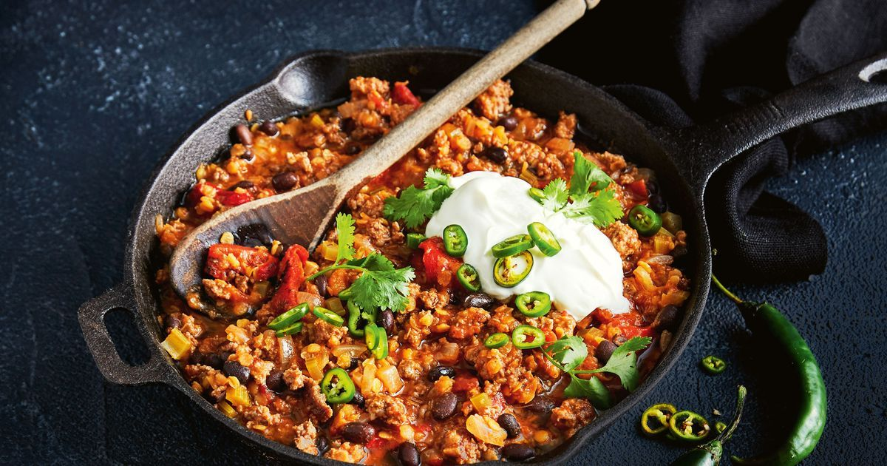

Slow Cooker Chilli

This recipe is for when its cold outside
Ingredients
- 1 tablespoon vegetable oil
- 1 pound ground chicken
- 2 tablespoons chili powder
- 2 cloves garlic, minced
- 1 ½ teaspoons ground cumin
- ½ teaspoon red pepper flakes
- 1 (29 ounce) can kidney beans, rinsed and drained
- 2 (10 ounce) cans diced tomatoes with green chile peppers
- 1 (15 ounce) can black beans, rinsed and drained
- 1 medium onion, chopped
- 1 medium jalapeno pepper, seeded and finely chopped (Optional)
- 2 cups chicken broth
- 1 (15.25 ounce) can whole kernel corn, drained
- 1 tablespoon sour cream, or to taste (Optional)
- 1 tablespoon shredded Cheddar cheese, or to taste (Optional)
- 1 tablespoon chopped green onions, or to taste (Optional)
- 1 jalapeno pepper, sliced, or to taste (Optional)
Directions
- Heat vegetable oil over medium-high heat in a medium-sized pan. Cook and stir ground chicken in the hot skillet until browned and crumbly, 5 to 7 minutes. Drain and discard grease.
- Combine chili powder, garlic, cumin, and red pepper flakes in a small bowl; stir into chicken to coat.
- Transfer chicken to a slow cooker. Add kidney beans, diced tomatoes with chiles, black beans, onion, and chopped jalapeno. Pour chicken broth over mixture and stir to combine.
- Cover and cook on High until chili has cooked down and thickened, about 4 hours, stirring corn kernels into mixture during last 30 minutes of cook time.
- Spoon chili into bowls and top each with sour cream, Cheddar cheese, green onions, and sliced jalapeno.